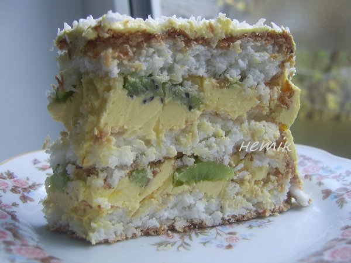

Кокосовий торт з ківі
Оригінал рецепту з dreamfood.ua

Інгредієнти
| Для коржів |
| Яєчний білок |
9 шт |
| Цукор |
300 гр |
| Кокосова стружка |
300 гр |
| Кохмаль |
3 ст.л. |
| Для крему |
| Яєчний жовток |
9 шт |
| Цукор |
150 гр. |
| Сметана |
300 гр. |
| Мука |
2 ч.л. |
| Масло |
200 гр. |
| Наповнювач |
Свіжі ківі |
Що робити
- З білки збити в густу піну, поступово добавляти 100 гам цукру. Збивати до "стоячих" піків. Додати
100 грам кокосової стружки і 1 ст ложку крохмалю. Перемішати і викласти у форму. Пекти при
температурі 200 гадусів.
Випікати таких три коржі.
- Для крему жовтки збити з цукром до пухкої маси, додати сметану і муку, вимішати і поставити на
маленький вогонь. Постійно помішуючи доварити до легенького загустіння. Остудити і збити з маслом.
- Збір: корж+крем+ківі пластинками+корж+крем+ківі+корж. Готовий торт обмастити остатками крему і
обсипати кокосовою стружкою.
Отже, маленький висновок, торт чудовий! Ківі можна замінити на вишню чи інші фрукти з кислинкою, що
додадуть свіжості.
Банош
Оригінал рецепту з papigutto.com.ua
Інгредієнти
| Молоко |
300 мл. |
| Цибуля |
1 шт. |
| Сало |
100 г. |
| Сметана |
200 г. |
| Кукурудзяна крупа |
150 г. |
| Бринза |
150 г. |
Що робити
- Сало наріжте кубиками і викладіть на сковорідку. Обсмажуйте при середньому нагріванні, помішуючи.
- У результаті у вас залишиться витоплений жир та підрум’янені шкварки. Шкварки поки що викладіть на
тарілку, жир залиште.
- Цибулю наріжте кубиком та викладіть на сковорідку зі свинячим жиром. Обсмажуйте до підрум’янювання.
- Тепер потрібно займатися основною справою – приготуванням баноша з кукурудзяного борошна. Сметану
та молоко змішайте і доведіть до кипіння.
- Тим часом промийте кукурудзяну крупу. Залийте її чистою холодною водою та помішайте. Смітинки
спливуть назовні, їх потрібно злити. Так повторюйте декілька разів. Підготовлену крупу додавайте в
молоко, що кипить, невеликими порціями. При цьому перемішуйте все (бажано дерев’яною лопаткою), щоб
не було грудочок.
- Через декілька хвилин крупа почне швидко набухати та вбирати в себе вологу. Тепер зменшіть вогонь
до мінімального.
- Продовжуйте варити, поки крупа не почне гуснути.
- Тепер постійно помійшуйте кашу, щоб вона не прилипала до дна та стінок каструлі. Продовжуйте, поки
каша не стане м’якою та буде легко відділятися від каструлі. На це піде приблизно 10-20 хвилин,
залежно від помелу крупи. Кукурудзяна крупа дрібного помелу вариться до готовності 10 хвилин.
Отже, маленький висновок, кукурудзяна крупа дрібного помолу вариться швидко, консистенція м’яка, без грудочок.
Домашній київський торт
Оригінал рецепту з 2recepta.com
Інгредієнти
| Для коржів: |
| Цукор |
200 гр. |
| Ванільний цукор |
1 стол.л |
| Білки |
200 гр (6-7 штук) |
| Борошно |
50 гр. |
| Горіхи кешью |
150 гр. |
| Для крему: |
| Масло 82,5% |
250 гр |
| Яйце |
1 шт |
| Какао |
2 стол.л |
| Цукор |
200 гр |
| Молоко |
150 мл |
| Ванільний цукор |
1 стол.л |
| Коньяк |
1 стол.л |
Що робити
- Білки залишити в глибокій тарілці на 12 годин у теплому місці. По закінченню часу в білках можна буде побачити багато невеликих бульбашок.
- Горіхи подрібнити. Для цього загорнути горіхи в пакет накрити рушником і гарненько постукати по ним качалкою або молоточком для відбивання м'яса.
- Потім горіхи змішати з борошном і цукром. Сахара потрібно взяти приблизно 150 грам, цукор, що залишився необхідний для збивання білків.
- Ось на цьому етапі білки збити з цукром і ванільним цукром до стійкої піни. Збивання білків до необхідної консистенції займається приблизно 5 хвилин.
- У білки додати підготовлені горіхи з борошном і цукром. Акуратно перемішати лопаткою, щоб рівномірно розподілити горіхи.
- Дві форми для випікання(18-21 см) повністю застелити пергаментним папером і поставити на один лист. Після цього рівномірно наповнити тестом обидві форми, верх розрівняти лопаткою.
- Поставити форми в розігріту до 150 градусів духовку на 2 години. Потім коржі дістати з духовки, не виймаючи з форм залишити на 12 годин, тільки по закінченню цього часу акуратно вийняти коржі з форм і відокремити від паперу. Коржі досить крихкі.
- Приготувати крем. У невеликій каструлі ретельно змішати молоко з яйцем. Іноді для крему я використовую жовтки, що залишилися (замість одного яйця кладу два-три жовтки), але це не по рецепту, а в цілях економії продуктів :)
- Потім всипати цукор і ванільний цукор, добре перемішати. Каструльку поставити на невеликий вогонь і, постійно помішуючи, варити 5-7 хвилин до загустіння. Сироп по консистенції повинен стати схожий на згущене молоко. Готовий сироп прибрати з вогню, каструлю накрити кришкою і залишити до повного охолодження.
- М'яке вершкове масло збити міксером з ванільним цукром і коньяком.
- Не припиняючи збивати поступово додавати сироп невеликими порціями. Крем повинен вийти однорідним і блискучим.
- На обробній дошці обрізати краю коржів, так торт вийде більш рівний. Крихітка знадобиться для прикраси.
- На дно блюда додати ложку крему, потім перший корж. (Крем потрібен для того, щоб готовий торт не ковзав по тарілці).
- Змастити корж кремом (крем використовувати не весь, а трохи більше половини).
- Накрити другим коржем, трохи придавив руками.
- В окрему чашу прибрати кілька столових ложок білого крему, він знадобиться для прикраси торта. У масу, що залишилася додати какао і збити міксером.
- Весь торт обмазати рівним шаром шоколадного крему.
- Боки торта обсипати залишилася крихтою. Верх Київського торта прикрасити за допомогою кондитерського шприца і горіхами.
- Охолодити торт в холодильнику пару годин.
Отже, маленький висновок. Горіхи можна брати будь-які, на всій смакю Пробували і грецьким горіхом і кушю, перший варінт був смачніший.